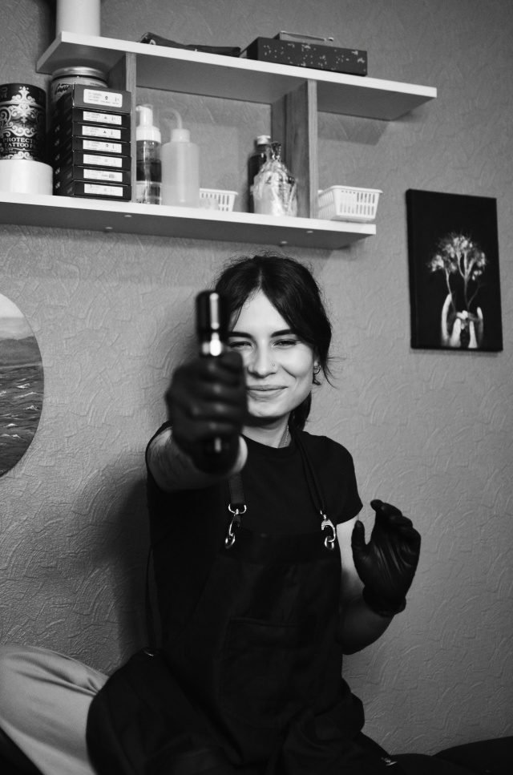

Работы остаются с вами навсегда
Я тату-мастер студии Moonlight в Перми. За плечами — медицинское образование, а к каждой татуировке отношусь не как к «перерисованной картинке», а как к делу всей жизни.
Первую тату я сделала себе сама — и уже не смогла остановиться. Сегодня в студии рождаются авторские эскизы, часть из которых мы прорабатываем вместе с нейросетями.
Последние работы
Наведите курсор на работу — она оживает.
Что мы умеем
Чёрно-белая графика
Реализм, графика, дотворк — глубокие тени и чистая линия.
Эскиз через ИИ
Экономичнее и больше вариантов на выбор. Либо распишем эскиз от руки — дороже, зато с душой.
Минимализм и лайнворк
Тонкая линия, аккуратные символы и надписи.
Перекрытие / коррекция
Обновим старую или неудачную работу — с полной консультацией.
Консультация
Обсудим идею, размер, стиль и цену перед записью.
Уход после сеанса
Полный дневник заживления с напоминаниями — в приложении.
Приложение Moonlight
Запись на сеанс, переписка с мастером, дневник заживления и цены — всё в одном месте. Работает прямо в браузере, ставить из магазина приложений не нужно.
Что говорят клиенты
«Делала минимализм на запястье — аккуратнее не видела ни у кого в городе. Записалась на вторую работу».
«Долго боялся большого цветного рукава — объяснили каждый шаг, было не страшно и результат превзошёл ожидания».
«Перекрыли старую работу так, что от неё не осталось следа. Дневник заживления в приложении реально помог».
Готовы к новой татуировке?
Запись, переписка с мастером, цены и дневник заживления — всё в приложении Moonlight.
Ждём в гостях
- ул. Тимирязева, 54, Пермь
- Вход со стороны салона красоты · домофон 21 + «вызов»
- По предварительной записи
Оставьте сообщение
Мастер увидит его в приложении и ответит в ближайшее время.